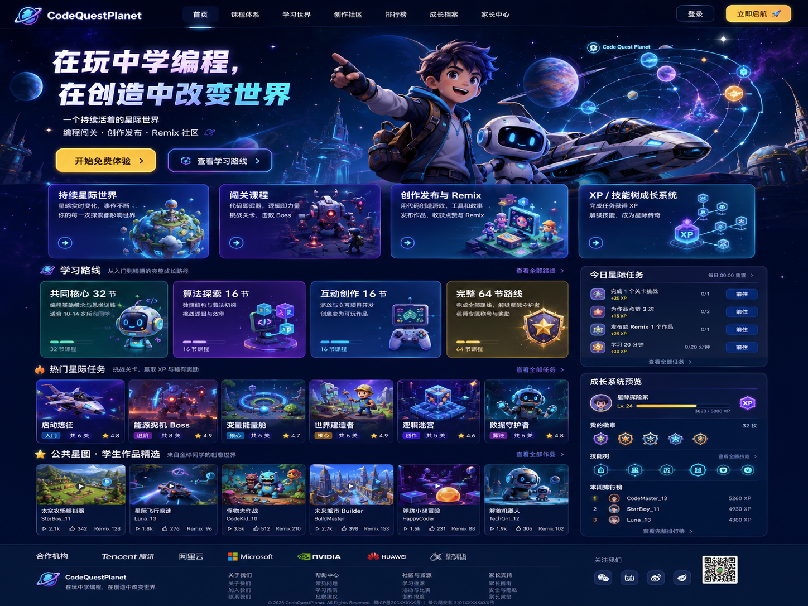

A
持续生长的星际世界
星舰、基地和世界地图会随学习不断演化，让每一次课程都有清晰的前进感。
不只是一套课程
每一次运行、失败和修改都会成为成长证据。学生不是被动完成练习，而是在持续建设自己的星舰、基地和作品宇宙。
星舰、基地和世界地图会随学习不断演化，让每一次课程都有清晰的前进感。
从观察地图到运行验证，知识点始终服务于一个真实可见的任务。
把自己的关卡发布到公共星图，让伙伴试玩、反馈，再从别人的作品继续创造。
技能树、作品卡和失败图鉴，把“我学会了什么”变成可回顾、可展示的成长轨迹。
完整课程体系
32 节共同核心建立稳固能力，之后进入算法探索或互动创作；也可以完成全部 64 节，点亮双技能树。
序列、循环、条件、变量、函数、数据结构与多对象协作。
真实产品入口
Signal Runner 已包含 48 节正式课程入口、3D 小岛任务、指令编排、运行日志和作品卡。现在就可以进入原型，完成第一场信标任务。
